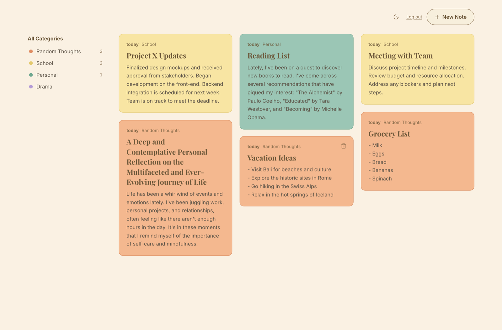

Senior Full Stack Challenge · Turbo AI
Turbo Notes
A cozy little home for your charming notes — with AI voice.
Django 5 · DRF · Postgres | Next.js 16 · TypeScript · TanStack Query
🔴 Live · notes.cardenas.pe
✓ Backend 100% · 124 FE tests
✓ Playwright E2E
🔒 httpOnly-cookie auth
OWASP Top 10
01 · The buildWhat it is
- Per-user notes — JWT auth, owner-scoped data (404 not 403, no existence leaks).
- Autosave editor — no save button; born on the first keystroke, PATCHed on an 800 ms debounce.
- Color categories — instant recolor; sidebar counts & filters.
- AI, live & optional — Whisper dictation · TTS read-aloud · suggest-title / summarize · hands-free "close my note".
- Graceful degradation — no key → free in-browser speech. AI is never a single point of failure.
Guiding principle
The right amount of engineering for the scope — clean layering, full coverage, documented tradeoffs, no invented complexity.
02 · See it runningLive demo

- 🔴 notes.cardenas.pe
- Login
demo@turbo.ai / demo12345
- Create a note → it autosaves; change category → recolors.
- Dictate by mic · read aloud · suggest title / summarize.
- Say "close my note" → AI names it, editor evaporates.
- Uniform card grid · newest note flagged Latest · dark mode · infinite scroll.
03 · How it fits togetherArchitecture
flowchart TD
UI["Next.js 16 SPA
React, TanStack Query, TS"]
CADDY["Caddy - HTTPS
routes / and /api"]
WEB["Next.js standalone :3000"]
API["Django 5 + DRF :8000
JWT, owner-scoped ViewSet"]
DB[("PostgreSQL 16")]
AI["OpenAI Whisper / TTS / gpt-4o-mini
optional, key-gated"]
UI -->|HTTPS| CADDY
CADDY -->|web| WEB
CADDY -->|api + httpOnly cookie| API
API --> DB
API -.->|graceful| AI
Idiomatic DRF (ViewSet + serializers + models). Frontend layered services → hooks → types — mockable, unit-testable.
04 · A flow that shows the designVoice → text, never a SPOF
flowchart TB
Start["User clicks mic"] --> Check{"Whisper enabled?"}
Check -->|"yes + MediaRecorder"| Rec["Record audio → POST /transcribe
→ OpenAI Whisper"]
Check -->|"no key / unsupported"| Web["Web Speech API
free, in-browser"]
Rec --> Ins["Insert text → autosave"]
Web --> Ins
Same pattern for TTS, assist, and the hands-free command — every AI path falls back to a free one. On a 401 the axios layer does a single transparent cookie refresh, then replays the request.
05 · Always green before mergeCI/CD & quality
flowchart TD
PR["Pull request"] --> CI["CI: lint, format, tests, build"]
PR --> CR["CodeRabbit
AI review"]
PR --> QL["CodeQL
security scan"]
CI --> G{"All green?"}
G -->|yes| M["Merge to main"]
G -->|no| F["Fix and push"] --> CI
M --> D["Ship green main
runner / manual"] --> L(("Live"))
- Gate — flake8 · black/isort · pytest ≥85% (now 100%) · Jest · next build.
- CodeRabbit — free AI PR review.
- CodeQL — TS + Python security scan.
- Dependabot — weekly deps + security PRs.
06 · Shipped, safelyHardened deploy & honest scope
"Saneado" deploy
- Prod is never touched by a PR — only reviewed, green
main ships.
- Isolated Compose on
127.0.0.1:3300 · idempotent Caddy with validate before reload.
- Post-deploy
/api/health check · secrets only on the box's .env.
- VPS firewalls inbound SSH → ships via manual tar+ssh / self-hosted runner (honest, not auto).
On the k8s/ folder
Kubernetes manifests are documentation of the scale-out path, not the deployment in use. The app runs as one isolated Compose stack — the right size today. The seam to Deployment + Service + HPA is shown, without overbuilding now.
Testing: backend pytest 100% (CI floor 85%, all OpenAI calls mocked) · frontend 124 Jest tests · Playwright E2E over the stack. ● Security: httpOnly-cookie auth, rate limiting, HSTS, audit log, OpenAI usage tracking, OWASP Top 10 write-up.
07 · Acted on the review feedbackPost-challenge hardening
- 🔒 httpOnly-cookie auth — tokens left
localStorage; now HttpOnly · Secure · SameSite=Lax cookies (no JS-readable token → no XSS exfiltration). Same-origin API ⇒ Lax is the CSRF defence, no extra token. Bearer still accepted for API clients.
- 🧩 Refactored the editor — the large
NoteEditor split into focused, unit-tested hooks useAiAssist · useReadAloud · useVoiceDictation (1265 → ~840 lines, 97% cov).
- 🧪 E2E with Playwright — register → create → autosave-persists → delete, over the real stack, wired into CI. It caught a real auth-redirect bug.
Why it matters
Each item shipped as its own PR → CI (incl. E2E) → merge → deploy. The point isn't just the diff — it's responding to feedback with verified, reviewable change, and knowing when SameSite alone is enough vs. reaching for more.